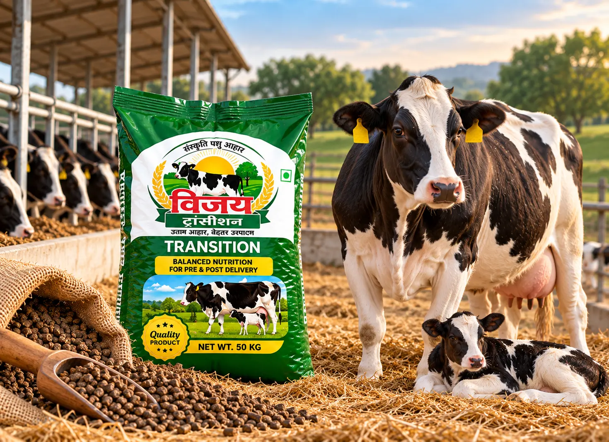
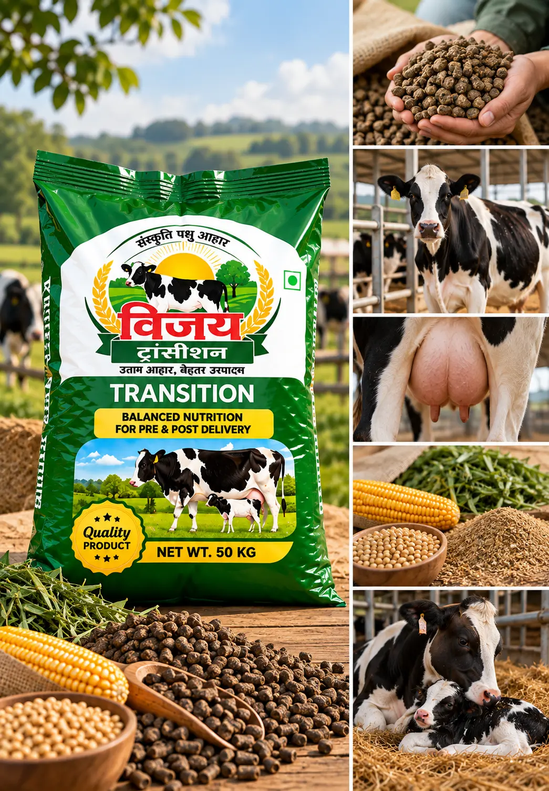
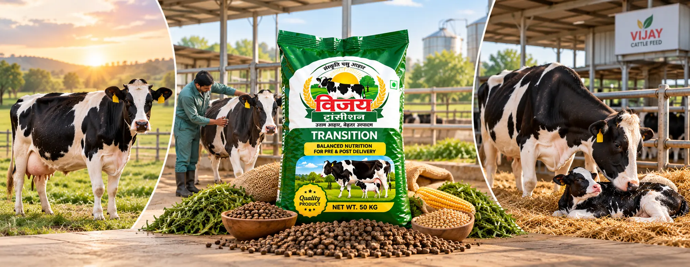
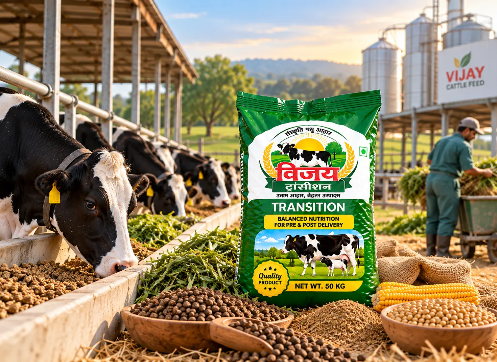
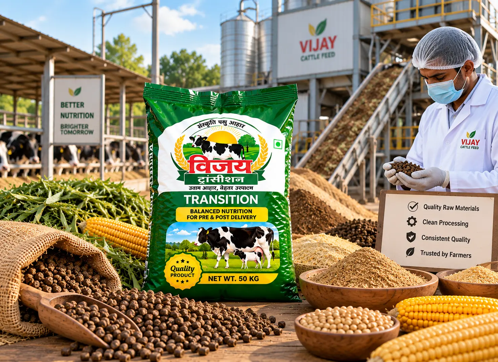

Made for the Transition Period
The weeks immediately before and after delivery represent an important stage in the feeding cycle of dairy cattle. During this period, nutritional requirements change as the animal prepares for delivery and enters the early post-delivery stage.
Vijay Transition is specifically positioned for this defined period—from approximately 3 weeks before delivery through 3 weeks after delivery.
According to the supplied product information, the feed is intended to support proper udder development during this stage.
 A defined feed option for approximately 3 weeks before to 3 weeks after delivery.
A defined feed option for approximately 3 weeks before to 3 weeks after delivery.
What Defines Vijay Transition
Designed Around Delivery
Vijay Transition is specifically positioned for the important feeding period immediately before and after delivery.
3 Weeks Before Delivery
According to the supplied product information, feeding can begin approximately three weeks before the expected delivery period.
3 Weeks After Delivery
The product is intended to continue for approximately three weeks following delivery.
Supports Udder Development
The supplied product information states that Vijay Transition supports proper udder development during the transition period.
A Defined Transition Feed
Its clearly defined feeding window makes Vijay Transition easy to position within a structured cattle feeding programme.

From Pre-Delivery to Post-Delivery Feeding
The transition period connects the final weeks before delivery with the first weeks afterwards. Vijay Transition provides farmers with a clearly identified feed option for managing this specific stage within the Vijay Cattle Feed range.
Pre-Delivery Stage
Begin the defined transition feeding period approximately three weeks before delivery.
Approaching Delivery
Continue appropriate feeding and animal management as the animal moves closer to delivery.
Delivery & Early Post-Delivery
The transition feeding period continues as the animal moves into the early stage following delivery.
Up to 3 Weeks After Delivery
Vijay Transition is positioned for use until approximately three weeks after delivery.


A Defined Feed Choice for the Transition Stage
The period surrounding delivery requires careful feeding and management. Vijay Transition gives dairy farmers a product specifically identified for this stage rather than using a general feed without a defined feeding period.
Its intended feeding window—from approximately three weeks before to three weeks after delivery—makes its role within the Vijay cattle feed range clear and easy to understand.
Combined with proper farm management and an appropriate overall diet, Vijay Transition can form part of a structured feeding programme around delivery.
Our Focus on Consistent Transition Feed
At Vijay Oil Mill, our cattle feed range includes products intended for different stages of animal development and dairy management. Vijay Transition is specifically positioned for the defined period surrounding delivery.
Our focus remains on consistent product preparation, dependable packaging and clear product identification, helping farmers and dealers distinguish Transition Feed from products intended for other stages.
The product should be used as part of an appropriately managed feeding programme according to the animal's nutritional requirements.


Let's Grow Together
Interested in our products or looking for a dealership opportunity?
Contact Vijay Oil Mill